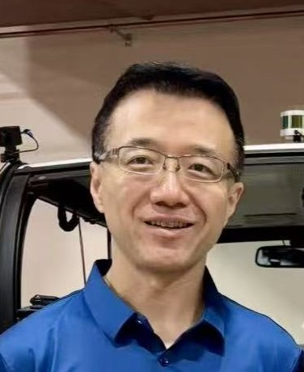

|

Dr. Song Fu
Professor
Site Director,
NSF eCAT Center for Electric, Connected and Autonomous Technologies
Director,
Vehicle and Edge Computing (VEC) Lab
Department of Computer Science and Engineering
University of North Texas
Denton, Texas 76203
(about 30 miles north of Dallas)
Dr. Song Fu is a
Professor of
Computer Science and Engineering with the
University of North Texas. He directs the
Vehicle and Edge Computing Lab (VEC). He is the site director of the
NSF eCAT Center for Electric, Connected and Autonomous Technologies for Mobility.
His research interest is primarily in vehicle computing, IoT-edge-cloud systems, parallel and distributed computing,
including architecture, performance,
dependability, cybersecurity, and machine learning. His
research has been supported in part by funding from the
National Science Foundation,
Department of Defense, Department of Energy, Google, Amazon, Cisco, Nvidia, Toyota, Fujitsu, and Xilinx.
[News]
[Research
Interests]
[Selected
Publications] [Teaching]
[Students]
[Services]
[Correspondence]
{Publications}
News
-
UNT will host the NSF eCAT Center IAB meeting on May 3rd [Detail].
-
IEEE International Conference on Mobility: Operations, Services, and Technologies (MOST) will be held at UNT, May 1-3, 2024 [Program].
-
27th International Conference on the Application of Accelerators in Research and Industry (CAARI 2024), Co-Chair of AI-ML in Nuclear Physics.
-
Dallas-Fort Worth Metroplex University AI Collaboration Symposium, September 2023 [News].
-
Our paper on privacy preserving data sharing for connected
autonomous vehicles was accepted by ACM/IEEE Symposium on
Edge Computing (SEC 2023).
-
Research
Center for Electric, Connected and Autonomous Technologies for Mobility (eCAT)
was awarded by NSF with 5-year phase I funding starting
March 2023!
-
We are collaborating with PACCAR in a SuperTruck 3 project
funded by DOE.
-
The real-time AI-FPGA system for sPHENIX will be presented
at TWEPP 2023 (Electronics for Particle Physics).
-
Our paper on perception workload on the edges with memory
contention for CAVs was accepted by 2023
IEEE International Conference on Edge Computing (EDGE 2023).
-
Our paper on smart additive manufacturing was accepted by
Journal of Intelligent Manufacturing.
-
New research grants from DOE SuperTruck 3 program and NSF HSI program.
-
15th IEEE/ACM International Conference on Utility and Cloud Computing, UCC2022 [Call for Papers].
-
Beilei successfully defended her PhD dissertation.
Congratulations, Dr. Jiang!
-
Our cybersecurity academy proposal was funded by NSA and NSF, May 2022.
-
The planning workshop of a new NSF IUCRC
Center on Electric, Connected and
Autonomous Technologies for Mobility
was successfully held in Detroit, April
27-28.
-
A paper on consensus in cooperative perception of autonomous
vehicles was accepted by the 42nd IEEE International
Conference on Distributed Computing Systems (ICDCS 2022).
-
A paper on deep learning optimization and acceleration on
FPGA was accepted by the 36th IEEE/ACM International
Parallel & Distributed Processing Symposium (IPDPS 2022).
-
Our student team took first place in the 2021 AWS DeepRacer
Student League Competition, the world’s first autonomous car
racing league! [News]
-
5th International Conference on Connected and Autonomous
Driving will be held on April 28-29, 2022. [Call for Papers]
-
Shuwen successfully defended her PhD dissertation.
Congratulations, Dr. Liang!
-
Our IUCRC planning proposal on electric, connected and
autonomous technologies for mobility was funded by NSF, July
2021.
-
Our cybersecurity academy proposal was
funded by NSA and NSF, July 2021.
-
Jacob successfully defended his PhD dissertation.
Congratulations, Dr. Hochstetler!
-
Our paper "Spatial Pyramid Attention for Deep Convolutional
Neural Networks" was accepted by IEEE Transactions on
Multimedia, 2021.
-
Our paper on vehicular edge computing was accepted by 2021
IEEE International Conference on Edge Computing (EDGE 2021).
-
Two papers on deep learning were accepted by 2021 IEEE
International Conference on Multimedia & Expo (ICME 2021).
Research Interests
As distributed
and IoT systems become pervasive and complex,
new foundations are needed for understanding and controlling
their integral properties. Dr. Fu’s research is dedicated to the
investigation, establishment, and experimental evaluation of new
theoretical foundations and system artifacts to significantly
improve the performance, scalability, security,
and energy efficiency.
His research interest is primarily in cyberinfrastructures, vehicles, distributed,
edge and cloud systems, including
-
Connected and Autonomous Vehicles
-
Edge and Cloud Computing
-
Cyberinfrastructures, Cybersecurity, Privacy and Security
-
Distributed and IoT Systems
-
Intelligent Systems, Machine Learning,
and Deep Learning
-
High Performance Computing
-
Resource Management and Performance Optimization
-
Storage Systems and System Architecture
Selected
and Recent Publications
[Complete list]
-
Deep Learning Based Melt Pool and Porosity Detection in Components Fabricated by Laser Powder Bed Fusion, Progress in Additive Manufacturing, 2024.
-
Impact of Environmental Factors on Flash Storage Performance in Autonomous
Vehicles: An Empirical and Analytical Study, IEEE
MOST, 2024.
-
User-Defined Privacy Preserving Data Sharing for Connected
Autonomous Vehicles Utilizing Edge Computing, ACM/IEEE
SEC, 2023.
-
Perception Workload Characterization and Prediction on the
Edges with Memory Contention for Connected Autonomous Vehicles, IEEE EDGE,
2023.
-
Output-Directed Dynamic Quantization for Deep Neural Network
Acceleration, ACM ICPP, 2023.
-
P3: A Privacy-Preserving Perception Framework for
Building Vehicle-Edge Perception Networks Protecting Data
Privacy, IEEE ICCCN, 2023.
-
A Real-Time AI-FPGA-based Triggering System for sPHENIX at
RHIC Primary, TWEPP 2023.
-
A Storage Computing Architecture with Multiple NDP Devices
for Accelerating Compaction Performance in LSM-Tree based KV
Stores,
Journal of Systems Architecture, 2022.
-
A Universal Predictor-Based Machine Learning Model for Optimal Process Maps in Laser Powder Bed Fusion Process,
Journal of Intelligent Manufacturing, 2022.
-
Distributed Consensus of Data-Sharing Decisions for Connected Autonomous Vehicles,
IEEE ICDCS, 2022.
-
MLCNN: Cross-Layer Cooperative Optimization and Accelerator Architecture for Speeding Up Deep Learning Applications,
IEEE/ACM IPDPS, 2022.
-
Slim-FCP: Lightweight Feature-Based Cooperative Perception
for Connected Automated Vehicles, IEEE Internet of Things
Journal, 2022.
-
Spatial Pyramid Attention for Deep Convolutional Neural
Networks, IEEE Transactions on Multimedia, 2021.
-
VECFrame: A Vehicular Edge Computing Framework for Connected Autonomous Vehicles, IEEE EDGE'21.
-
CoConv: Learning Dynamic Cooperative Convolution for Image
Recognition, IEEE ICME'21.
-
Study of Interconnect Errors, Network Congestion, and
Applications Characteristics for Throttle Prediction on a
Large Scale HPC System, Journal of Parallel and
Distributed Computing, 2021.
-
CoFF: Cooperative Spatial Feature Fusion for 3D Object
Detection on Autonomous Vehicles, IEEE Internet of Things
Journal, 2021.
-
Position-Aware Recalibration Module: Learning From Feature
Semantics and Feature Position, IJCAI'20.
-
SPANet: Spatial Pyramid Attention Network for Enhanced Image
Recognition, IEEE ICME'20 (Best
Student Paper Award).
-
F-Cooper: Feature based Cooperative Perception for
Autonomous Vehicle Edge Computing System Using 3D Point
Clouds, ACM/IEEE SEC'19 (Best
Paper Award).
-
Exploring Declustered Software RAID for Enhanced Reliability
and Recovery Performance, IEEE SRDS'19.
-
Characterizing Disk Health Degradation and Proactively Protecting Against Disk Failures for Reliable Storage Systems, IEEE ICAC'19.
-
Cooper: Cooperative Perception for Connected Autonomous
Vehicles based on 3D Point Clouds, IEEE ICDCS'19.
-
Near-Data Processing-Enabled and Time-Aware Compaction
Optimization for LSM-tree-based Key-Value Stores, ACM/IEEE ICPP'19.
-
Characterizing and Modeling Reliability of Declustered RAID, IEEE/IFIP
DSN'19.
Teaching
Dr. Fu teaches
graduate and undergraduate course related to computer
architecture, operating systems, and cloud, distributed and
parallel computing.
-
CSCE 3600: Principles of Systems Programming (F20)
-
CSCE 3730: Reconfigurable Logic (F10, F11, F12, F13, F14)
-
CSCE 4550: Introduction to Computer Security (F17, F18, F19)
-
CSCE 4570: Information Privacy (S20, S21)
-
CSCE 4610:
Computer Architecture (S19)
-
CSCE 4620/5620: Real-Time Operating Systems (F13, F14, F15, F16,
F21, F23)
-
CSCE 5160: Parallel Processing and Algorithms (S23, S24)
-
CSCE 5565: Secure Software Systems (S19, S20)
-
CSCE 5610:
Computer Systems Architecture (F19)
-
CSCE 5640: Operating System Design (F12, F15, F16)
-
CSCE 5933:
Virtualization Technologies and Security (S11)
-
CSCE 6680: Advanced Distributed Computing (S12, S13, S15,
S16)
-
CSCE 6933: Advanced
Topics in
Security and
Privacy
(F18, F22)
-
CSCE 6933: Advanced
Topics in
Connected
Autonomous
Vehicles and
Security
(F20)
Students
Current students and research associates in the Vehicle and Edge Computing (VEC) Lab:
-
Tianyu Bai (Ph.D. candidate)
-
Harry Fu
(Ph.D. student)
-
Zhaochen Gu
(Ph.D. candidate)
-
Ying He (Ph.D. candidate)
-
Aishwarya Manjunath
(Ph.D. student)
-
Alejandro Olvera
(Ph.D. student)
-
Simon Tandi
(Ph.D. student)
-
Sihai Tang
(Ph.D. candidate)
-
Fanjie Ye
(Master's student)
-
Hang Tran
(Undergraduate student)
-
Cathy Du (TAMS
student)
-
Jason Hirsch
(TAMS student)
-
Anthony Zhou
(TAMS student)
-
Tiffany Ryu (TAMS
student)
Alumni
-
Beilei Jiang
(Ph.D., 2022) Current employment: Clinical Assistant Professor at the University of North Texas
-
Shuwen Liang
(Ph.D., 2021) Current employment: Amazon
-
Jacob Hochstetler
(Ph.D., 2021) Current employment: Clinical Assistant Professor at the University of North Texas
-
Zhi (George) Qiao
(Ph.D., 2020) Current employment: Microsoft
-
Xu Ma
(Ph.D. candidate, 2020)
-
Zongze Li
(Ph.D., 2019) Current employment: TetraMem
-
Song Huang
(Ph.D., 2019) Current employment: Big Data Developer, Allstate Corporation
-
Ziming Zhang
(Ph.D., 2015) Current employment: Software Developer, OGRE Systems, Inc.
-
Bayaner Arigong
(Ph.D., 2015. co-advised with Dr. Hualiang Zhang)
Current employment: Florida A&M University-Florida State University
-
Jin Shao
(Ph.D., 2015. co-advised with Dr. Hualiang Zhang)
Current employment: Qorvo, Inc., Adjunct Faculty at the
University of North Texas
-
Qiang Guan
(Ph.D., 2014) Current employment: Assistant Professor at Kent State University, Ohio
-
Husanbir Singh
Pannu (Ph.D., 2012, with
Dr. Jianguo Liu) Current employment: Assistant
Professor at Thapar Institute of Engineering & Technology,
India
-
Haidi Chen
(M.S., 2020. with thesis) First employment: Amazon
-
Nandini Damera (M.S.,
2019)
-
Matthew
Davidson (M.S., 2018)
-
Milko Balakchiev
(M.S., 2015. with thesis) First employment: Mede
Analytics, Inc.
-
Ramureddy
Venumuddala (M.S., 2015. with thesis) First
employment: Namitus Technologies, Inc.
-
Kranthi Kumar
Tatoju (M.S., 2018)
-
Nanda Rampura
Vijaykumar (M.S., 2017)
-
Gayathri
Narayanasamy (M.S., 2015)
-
Savitha
Chintakindi (M.S., 2013)
-
Devender Singh
(M.S., 2012)
-
Neeraja Ganesh
(M.S., 2012)
-
Kayleigh Bush
(B.S., 2013)
-
Yash Ramamurthy
(B.S., 2013)
-
Chi-Chen Chiu
(B.S., 2012)
-
Oluwaseun Adeyemi
(B.S., 2011)
-
Yosef Borga
(Undergraduate research student, SUPER program, 2011)
-
Linfei Li
(TAMS
student, 2015-2017, now studies at the University of Chicago)
-
Jason He (TAMS
high school
student, 2012-2014, received two awards in the 2013 DFW Science and
Engineering Fair)
-
Michael Wang
(TAMS
high school student, 2012)
-
Xiajun Wang
(Visiting scholar, 2013-2014)
Professional
Services
Dr. Fu serves as an Editor and Guest Editor
for three international journal. He has participated in the
program committees of several international conferences and
workshops in his field.
-
Panelist for U.S. National Science Foundation; Proposal
Reviewer for Portuguese Foundation for Science and Technology, Canada Foundation for Innovation, Research Grants Council of Hong Kong, Kentucky Science and Engineering Foundation, South Carolina
Institutions of Higher Education.
-
Steering Committee, IEEE International Performance Computing
and Communications Conference
-
Program Co-Chair, IEEE International Conference on Mobility:
Operations, Services, and Technologies (MOST), 2024.
-
Program Co-Chair, IEEE/ACM International Conference on
Utility and Cloud Computing (UCC), 2023.
-
Program Co-Chair, the 42nd IEEE International Performance
Computing and Communications Conference, 2023.
-
Program Co-Chair, IEEE/ACM International Conference on
Utility and Cloud Computing (UCC), 2022.
-
Program Chair, IEEE International Conference on Connected and Autonomous Driving,
2022.
-
Program Vice Chair, IEEE Cloud Summit Conference, 2021.
-
Student Programs Chair, IEEE International Conference on
Cluster Computing, 2021.
-
Program Vice Chair, IEEE Cloud Summit Conference, 2020.
-
General Chair, the 35th IEEE International Performance
Computing and Communications Conference, 2016.
-
Workshop Chair, the 26th IEEE International Conference on
Computer Communications and Networks, 2017.
-
Travel Grant Chair, the 24th IEEE International Conference
on Computer Communications and Networks, 2015.
-
General Vice-Chair, the 32nd IEEE International Performance
Computing and Communications Conference, 2013.
-
Program Chair, the 31st IEEE International Performance
Computing and Communications Conference, 2012.
-
Publication Chair, the 30th IEEE International Performance
Computing and Communications Conference, 2011.
-
Track Chair, the 20th IEEE International Conference on
Computer Communications and Networks, 2011.
-
Registration Chair, IEEE International Symposium on
Electronic System Design, 2011.
-
Poster Chair, the 29th IEEE International Performance Computing
and Communications Conference, 2010.
-
Program Committee, IPDPS, ICCD, ICDCS, IGSC, ISM, CLOUD, CLOUDNET, BodyNet,
CLOUD COMPUTING, NAS, ICNC,
INTERNET, COMPSAC, I-SPAN, FutureTech, ICPADS, AINA, CloudCom, IC3, Compute, FCST, EUC.
-
Paper Reviewer, IEEE Transactions on Parallel and
Distributed Systems (TPDS),
IEEE Transactions on Computers (TOC), IEEE Transactions on
Emerging Topics in Computing (TETC), IEEE Transactions on
Services Computing (TSC),
ACM Transactions on Autonomous and Adaptive Systems (TAAS),
Journal of Parallel and Distributed Computing (JPDC),
Journal of Systems and Software (JSS),
Journal of Future Generation Computer Systems (FGCS),
Journal of Supercomputing (JSC).
-
ACM senior member
-
IEEE senior member
-
Member of ASEE and Sigma Xi.
Correspondence
|
|
NTRP F250
Department of Computer Science & Engineering
University of North Texas
1155 Union Circle #311366
Denton, Texas 76203 |
|
Phone: (940) 565-2341 (Office) |
|
 |
Email:
Song.Fu@unt.edu |
|
Fax: (940) 565-2799 |
|